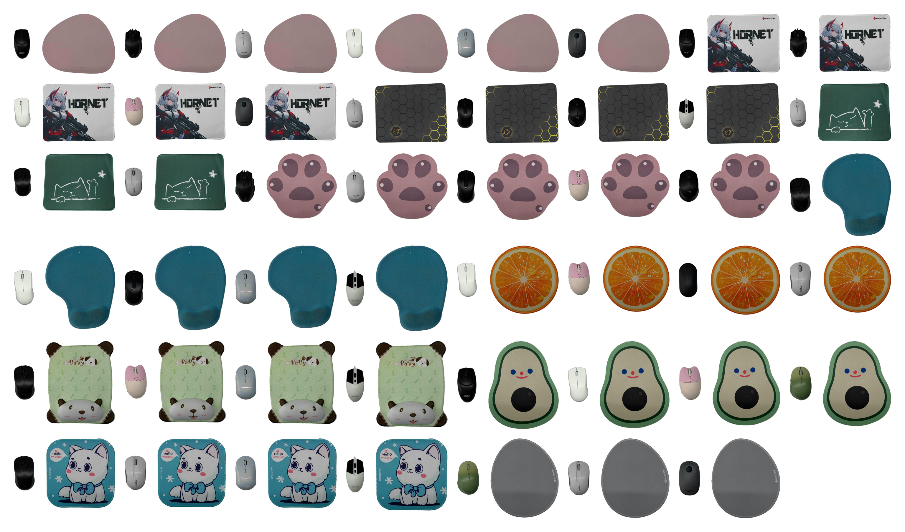
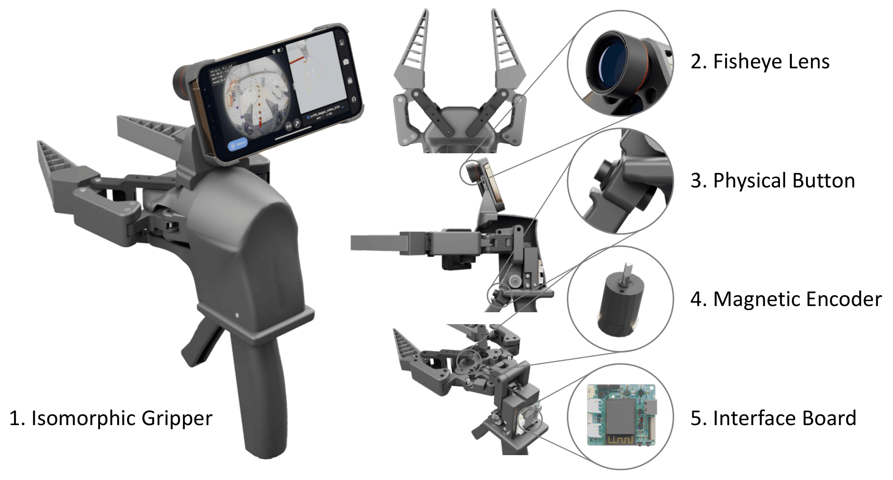
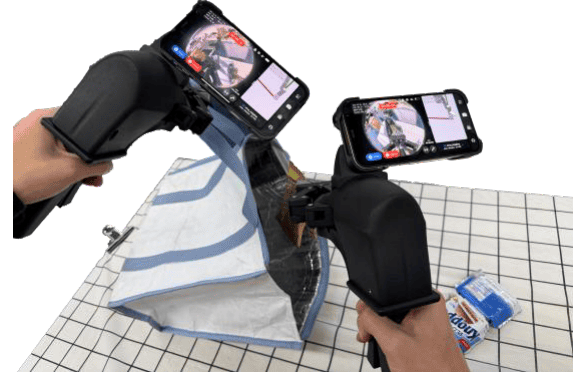
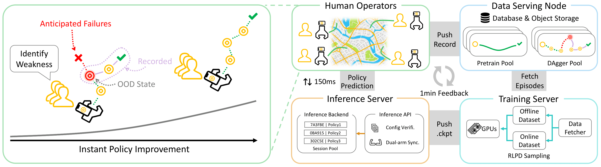
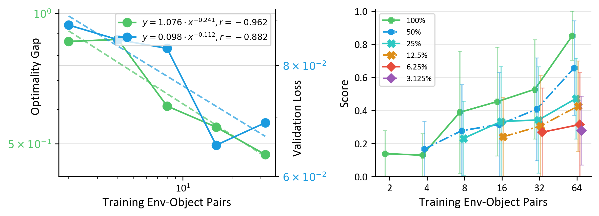
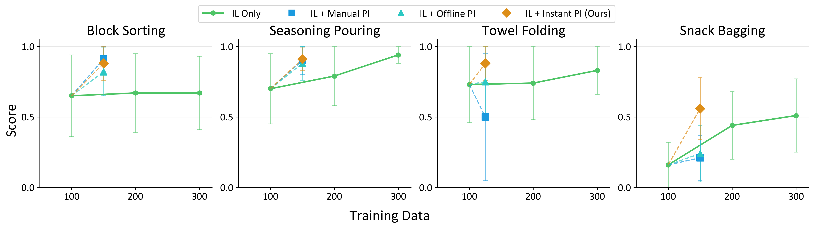
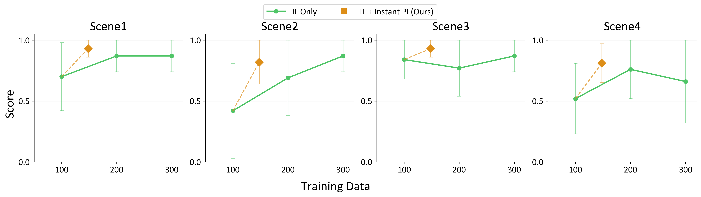
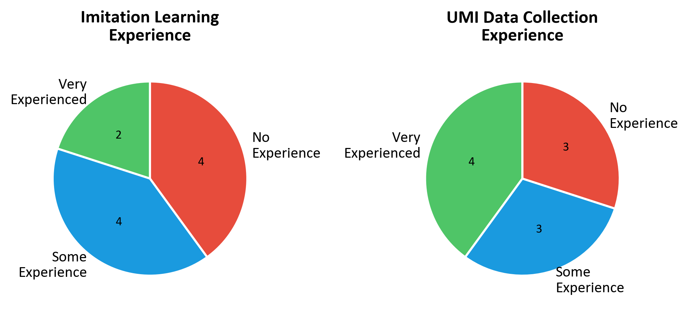
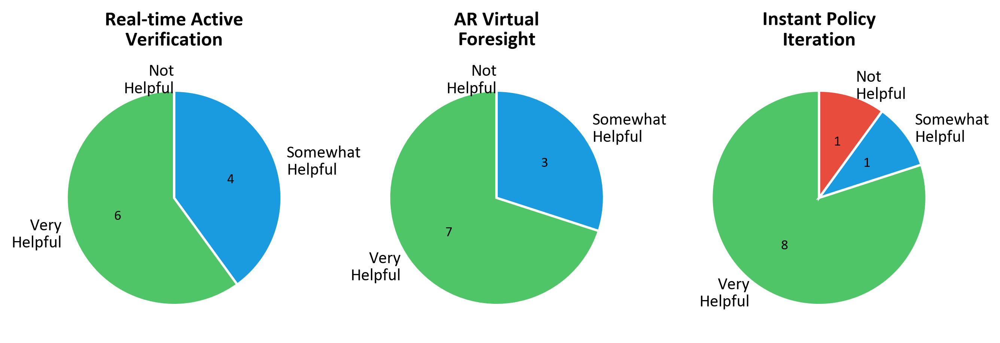
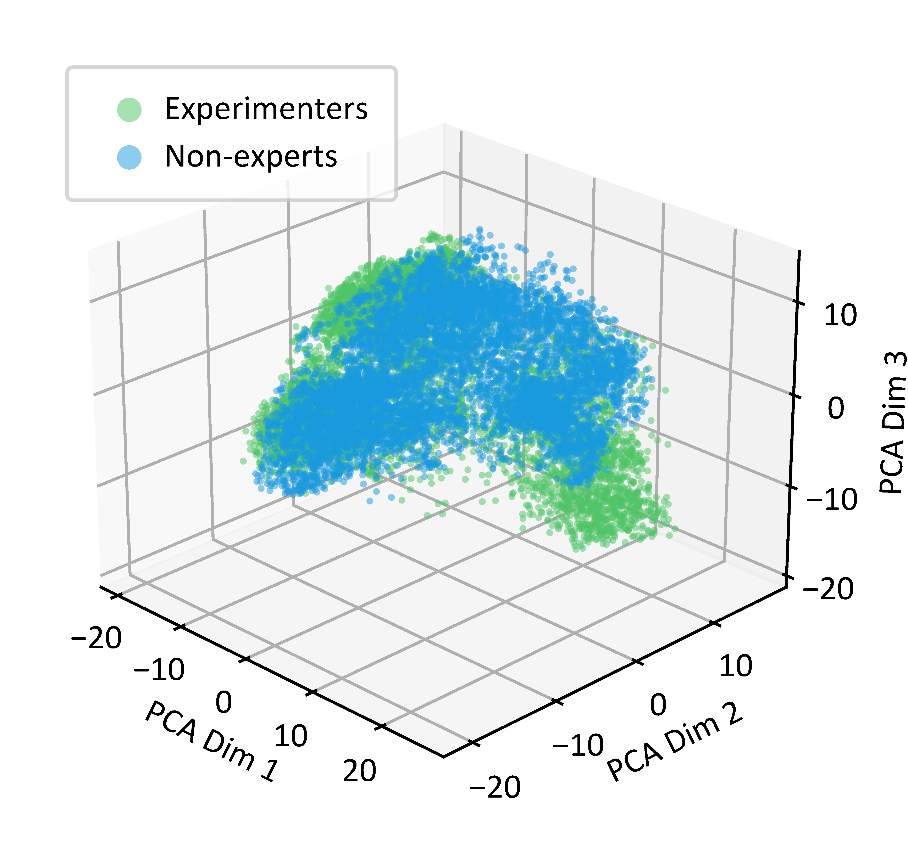

🎯 Environments in Data Collection

📦 Objects in Data Collection

Scaling imitation learning is fundamentally constrained by the efficiency of data collection. While handheld interfaces have emerged as a scalable solution for in-the-wild data acquisition, they predominantly operate in an open-loop manner: operators blindly collect demonstrations without knowing the underlying policy's weaknesses, leading to inefficient coverage of critical state distributions. Conversely, interactive methods like DAgger effectively address covariate shift but rely on physical robot execution, which is costly and difficult to scale.
To reconcile this trade-off, we introduce RoboPocket, a portable system that enables Robot-Free Instant Policy Iteration using consumer smartphones. Its core innovation is a Remote Inference framework that visualizes the policy's predicted trajectory via Augmented Reality (AR) Visual Foresight. This immersive feedback allows collectors to proactively identify potential failures and focus data collection on the policy's weak regions without requiring a physical robot. Furthermore, we implement an asynchronous Online Finetuning pipeline that continuously updates the policy with incoming data, effectively closing the learning loop in minutes. Extensive experiments demonstrate that RoboPocket adheres to data scaling laws and doubles the data efficiency compared to offline scaling strategies, overcoming their long-standing efficiency bottleneck. Moreover, our instant iteration loop also boosts sample efficiency by up to 2x in distributed environments a small number of interactive corrections per person.
The hardware design is governed by three architectural principles:

The software pipeline acts as an active supervisor through two mechanisms:


Fig. 1: Overview of Robot-Free Instant Policy Iteration. (Left) Using AR Visual Foresight, users identify policy weaknesses and proactive failures. (Right) Collected data is streamed to the Data Serving Node, with the Training Server performing online finetuning and pushing updated weights to the Inference Server in real-time.
Standard Behavior Cloning suffers from covariate shift, where policies encounter out-of-distribution states due to compounding errors. While interactive methods like DAgger address this by collecting on-policy corrective data, they require physical robot execution—limiting scalability to diverse, unstructured environments.
We implement a lightweight client-server architecture where the iPhone streams observations to a remote GPU server. The server maintains persistent model states and returns predicted trajectories with \(\lt\)150ms latency over Wi-Fi, enabling real-time policy evaluation without physical hardware.
To enable non-expert users to identify policy weaknesses, we project predicted trajectories as virtual "coins" onto the real-world view via AR Visual Foresight. Since our camera uses a fisheye lens, we apply distortion-aware vertex displacement based on calibrated intrinsics to ensure spatial alignment. A physical intervention button allows users to query the policy at any state, enabling proactive data collection in policy-weak regions.
Collected demonstrations are immediately uploaded and processed via online finetuning using weighted sampling to prevent catastrophic forgetting. Updated weights are synchronized to the Inference Server every \(N\) steps. This creates a tight feedback loop: users visualize failures in AR, collect corrections, and observe improved policy behavior within minutes.
Before: Correction
After: Success
We measure tracking accuracy by rigidly attaching RoboPocket to the robot end-effector, achieving 2.8mm position error and 0.4° rotation error for single-device setups—outperforming UMI's 6.1mm and 3.5°.
To validate data quality for scaling, we collect 1,600 demonstrations across 64 environment-object pairs for a Mouse Arrangement task, confirming strong power-law correlation (r = -0.962) with data diversity.


We evaluate our Robot-Free Instant Policy Iteration (IL + Instant PI) on four challenging manipulation tasks:
We compare our method against three baselines:
Our method consistently achieves up to 2× data efficiency compared to pure IL baselines across all tasks. For Block Sorting, IL + Instant PI achieves performance comparable to expert manual intervention without requiring a physical robot. In Seasoning Pouring, our approach matches 300 IL performance with fewer data while maintaining significantly lower variance (0.08 vs 0.30 for Offline PI). For Towel Folding, only our method achieves stable gains (0.88), while IL + Manual PI causes performance degradation (0.73 → 0.50). In Snack Bagging, our method efficiently surpasses the 300 IL baseline (0.56 vs 0.51).

To validate the scalability and generalizability of our system in distributed settings, we deploy RoboPocket to four users operating across four distinct scenes. The experimental protocol consists of two phases: First, each user collects 25 demonstrations of the Block Sorting task in their respective environment, resulting in a base dataset of 100 demonstrations used to train an initial policy. Second, all four users simultaneously perform Robot-Free Instant Policy Iteration (IL + Instant PI), each collecting 12 interactive corrections in their local environment.
The results demonstrate significant performance improvements across all environments. The base policy exhibits varying performance across scenes, with particularly challenging environments showing lower success rates (Scene 2: 0.42, Scene 4: 0.52). However, after distributed policy iteration with only 12 corrections per user, success rates improved dramatically (Scene 2: 0.42 → 0.82, Scene 4: 0.52 → 0.81). This highlights a critical advantage: while scaling offline data encounters diminishing returns across diverse scenarios, our system enables distributed effective finetuning that achieves robust generalization without requiring physical robot deployment in each environment.

To validate whether RoboPocket enables non-expert users to identify policy weaknesses and collect correction data in a robot-free setting, we conduct a user study with volunteers having varying levels of experience in imitation learning and UMI-based data collection. Participants are invited to perform the Block Sorting task using Robot-Free Instant Policy Iteration.

Regarding Real-time Active Verification, all users report that the real-time constraints and feedback mechanisms are beneficial for data collection, with over half rating them as "Very Helpful". For AR Virtual Foresight, all users agree that our AR Visual Foresight feature effectively assists in discovering model failure cases, with 7 out of 10 participants rating it as "Very Helpful". Most critically, 8 out of 10 users believe that Instant Policy Iteration is highly beneficial for realizing model improvement.
When asked about the most significant advantage of RoboPocket, the majority of users highlight the Real-time Uploading and Online Finetuning mechanisms make the collection process significantly more effective and engaging.

To assess the quality of data collected by non-expert users, we perform a visualization analysis using PCA projection of DINOv2 features extracted from state observations. We compare the state coverage achieved by non-expert participants using Robot-Free Instant Policy Iteration against data collected by experienced experimenters.
The analysis reveals that our system enables non-expert users to achieve state coverage comparable to that of experienced experimenters. This validates that RoboPocket successfully democratizes high-quality data collection by providing guidance through AR Visual Foresight.
